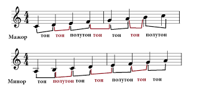

Урок 19. Паузы. Строение мажорной гаммы.
Теория
Пауза — это знак молчания в музыке, который имеет определённую длительность, как и ноты.
- Паузы бывают целые, половинные, четвертные, восьмые и шестнадцатые — каждая соответствует длительности одноимённой ноты.
- Паузы делают музыку выразительной, помогают разделять фразы и акцентировать внимание на важных моментах.
- Мажорная гамма — это последовательность из семи звуков, расположенных по определённому порядку тонов и полутонов.
- В мажорной гамме между нотами До–Ре, Ре–Ми, Фа–Соль, Соль–Ля, Ля–Си — тон; между Ми–Фа и Си–До — полутон.
Строение мажорной гаммы: тон — тон — полутон — тон — тон — тон — полутон.
Например, гамма До-мажор: До, Ре, Ми, Фа, Соль, Ля, Си, До.
Паузы и знание строения гаммы помогают сделать исполнение музыки более выразительным и правильным.
Упражнения
- Распознавание паузы: Определите длительность паузы по её обозначению (Целая пауза — длинная тишина; Четвертная пауза — короткая тишина; Восьмая пауза — очень короткая тишина).
- Распознавание интервала: Определите, какой интервал между нотами — тон или полутон (Между До и Ре — тон; Между Ми и Фа — полутон; Между Ля и Си — тон; Между Си и До — полутон).
- Пение: Пропойте мажорную гамму вверх и вниз, делая паузы в удобных местах (До, Ре, Ми, Фа, Соль, Ля, Си, До).
Аудио-примеры
Паузы разной длительности:
Мажорная гамма вверх и вниз:
Визуальные примеры
Обозначения пауз на нотном стане:

Строение мажорной гаммы на нотном стане:
